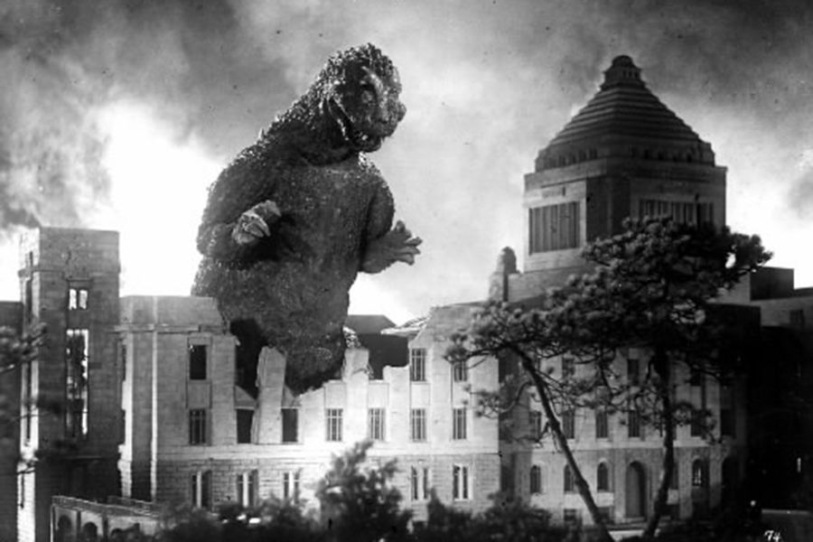

Symphetamine
@symphetamine
Hi, I'm Sarah. Thirty.
Eiji Tsuburaya: Making Godzilla
Father of Tokusatsu
Author So & So 11/3/2023
Eiji Tsuburaya (1901-1970) was a Japanese special effects
director, filmmaker, and cinematographer, known as the
"Father of Tokusatsu" ("tokusatsu" means "special
effects").
He was the co-creator of the iconic kaiju (monster)
"Godzilla." In the 1960s, Tsuburaya founded his own
company, Tsuburaya Productions, which produced the
highly successful "Ultra" television series that gave
birth to another iconic figure, the superhero Ultraman.
Godzilla and Ultraman went on to become successful
franchises.
Eiji was the grandfather of the late actor Hiroshi
Tsuburaya (whom I had also submitted to this blog).
Tsuburaya sitting in an iron shooting crane in 1934.
He looked so dapper here!
Contemporary writers have frequently stated that
Tsuburaya is one of the most influential figures in the
history of cinema, with biographer August Ragone claiming
that Tsuburaya's cinematic importance is on par with
Akira Kurosawa. The Independent's Doug Bolton wrote
that even "people not familiar with Japanese science
fiction will easily recognise [sic] the legacy of
Tsuburaya's work". The Tokusatsu Network said that
Tsuburaya was "possibly the most influential figure
in the Japanese film industry" and stated that his
legacy "lives on to this day through his creations and
has had a large enough impact for him to be compared to
Walt Disney."
